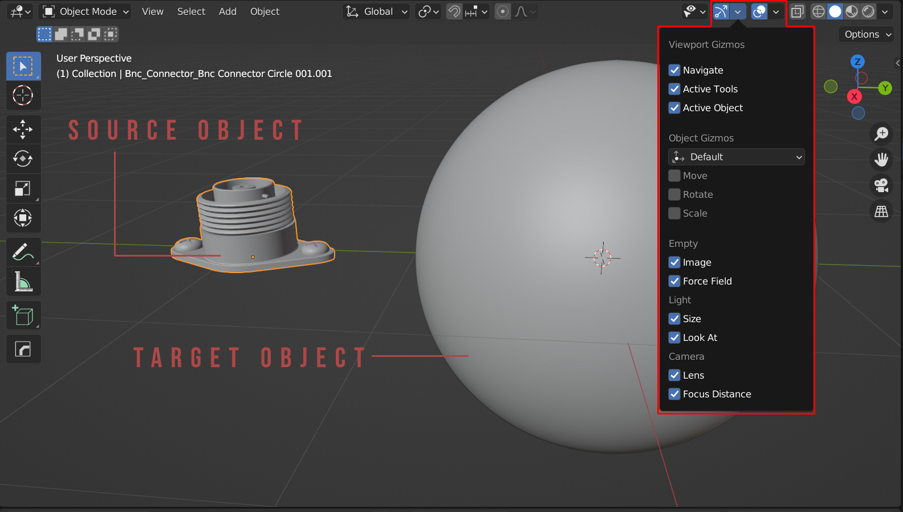
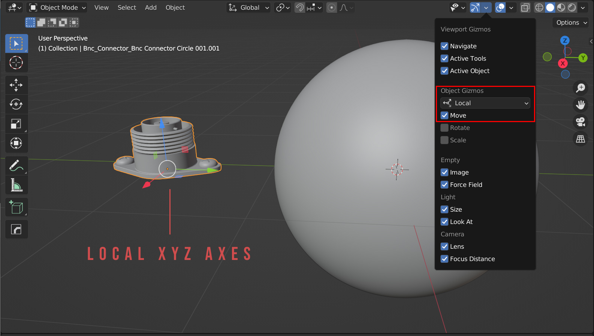
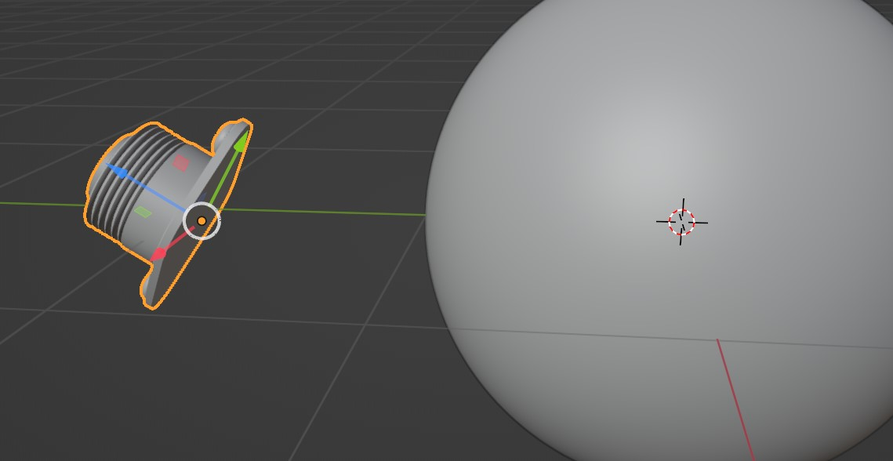
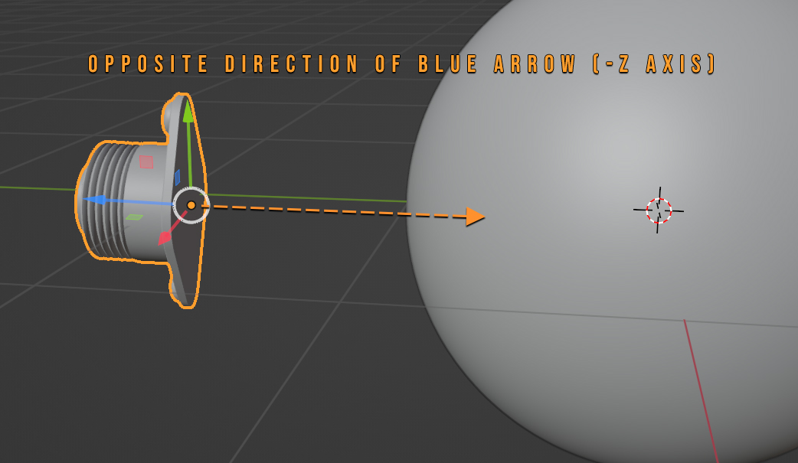
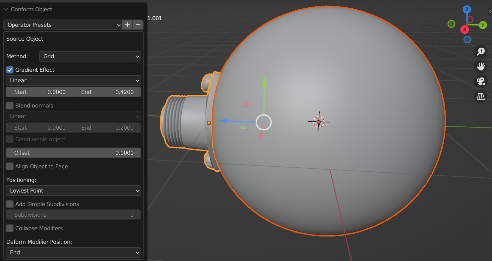
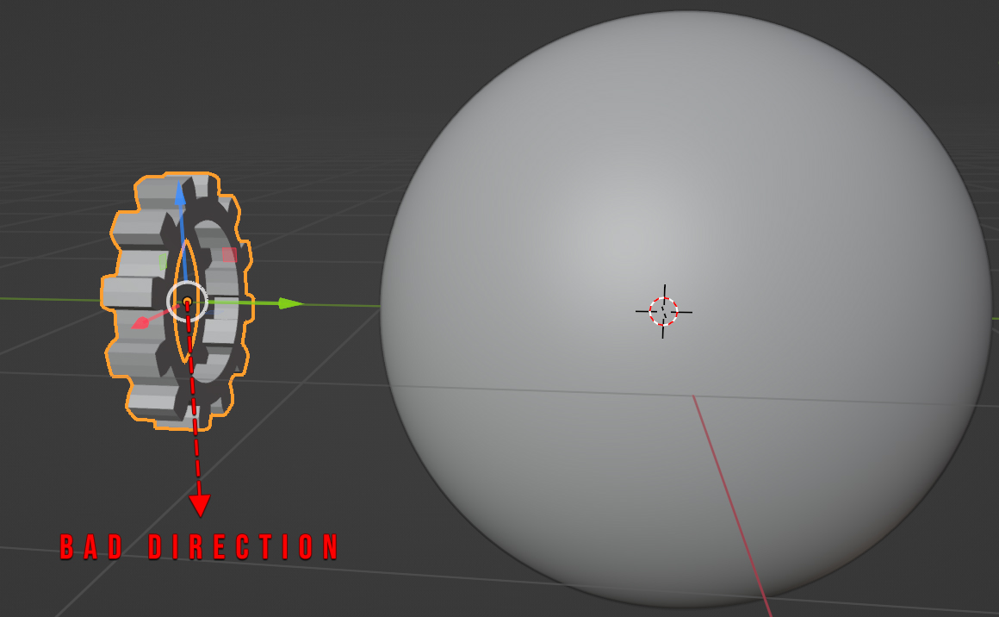
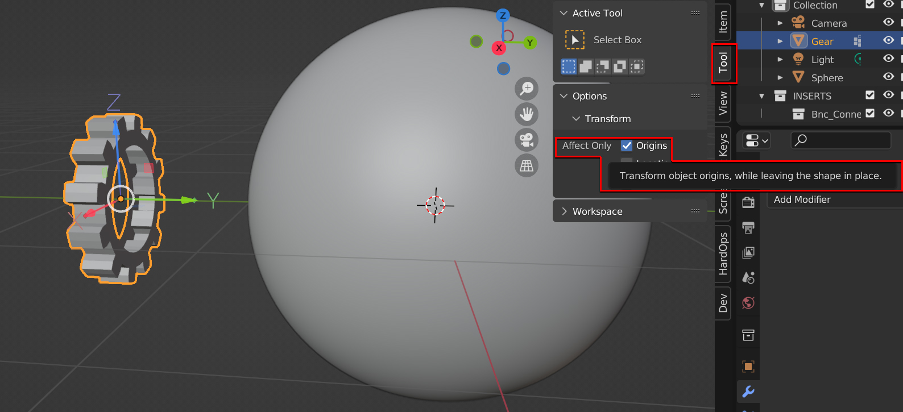
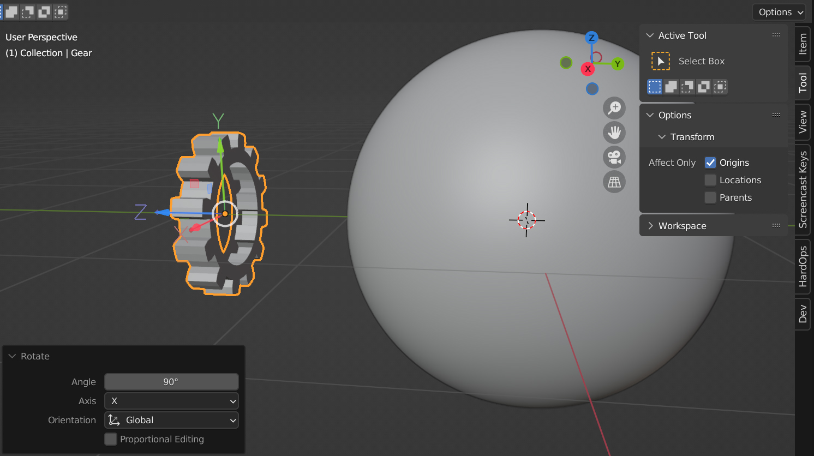
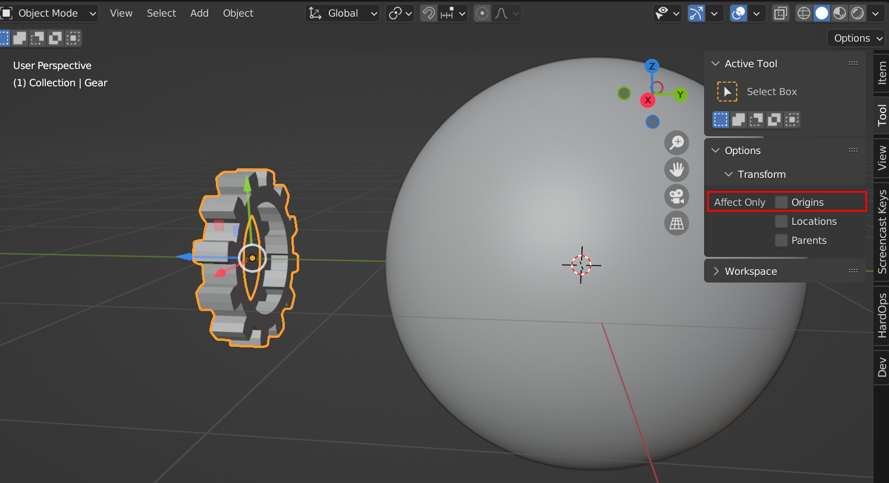
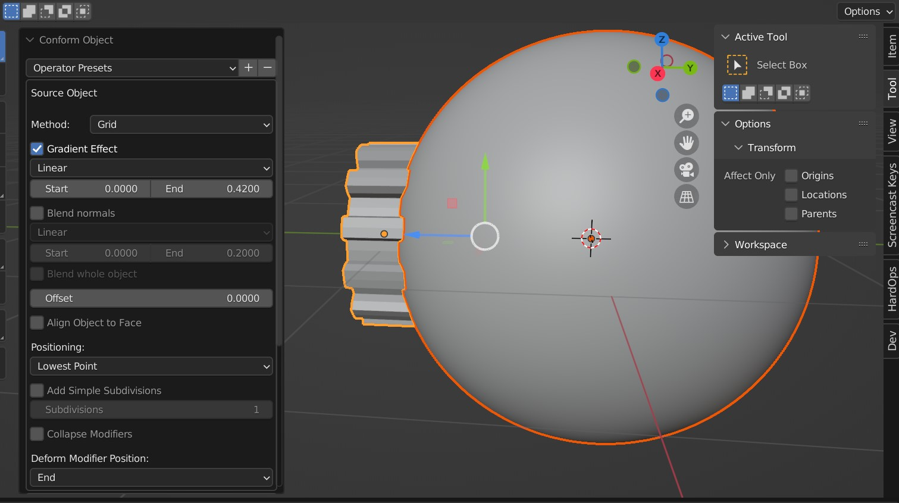

Tips and Troubleshooting
Bad Deformations
This can occur for several reasons:
Not enough topology (vertices, faces) on the source of the target object.
The tops of the object look best when the effect is not as strong.
The meshes need more subdivision.
There are several things to try:
Enable the Gradient Effect to smooth the deformation at the top of the object.
Increase the resolution of the target object by using a subdivision surface modifier.
Increase the resolution of the deformation grid in the Options.
Here, the target sphere object’s resolution was increased using a subdivision surface modifier, and the Gradient Effect was enabled for the screw part to lessen the effect at the top.
“The bottom of the source object is not pointing towards the target object”
See this video here:
Or follow the explanation below:
This error occurs when the bottom of the source object is not pointing towards the target object.
The bottom of the source object’s center must be pointing towards the surface of the target object when running the operation. The bottom of the object is the lowest part of the object when the object is not rotated.
You will need to orientate the object correctly by rotating it in Object mode.
The best way to check this is to first visualize it in blender:
With the source object selected, in the top-right of the 3D view, click the ‘Viewport Gizmos’ menu.
Under ‘Object Gizmos’, select ‘Local’ from the drop-down box, and tick the ‘Move’ checkbox. This will display the local X/Y/Z axes for the selected object.
Now, with the object selected, press the R key to rotate it (you can then press X, Y, or Z to restrict the rotation if you wish, and type a number for the number of degrees), and click the left mouse button to complete the rotation. You’ll see that the object’s gizmo axis display has also rotated, as it displays the rotation of the object.
The ‘Bottom’ of an object is the opposite direction of the blue Z-Axis arrow (The -Z axis). It is this opposing direction that needs to be pointing towards the source object.
When the axis is aligned like this, you should now be able to perform the Conform Object operation:

What happens if the bottom of the source object is in the wrong orientation?
You can change the orientation of the axis so that the bottom of your source object is pointing in the right direction:
With the object selected, press the ‘N’ key to access the viewport’s right-hand Properties tabs if they aren’t there already.
Select the ‘Tool’ tab.
Open the ‘Options’ section, and expand the ‘Transform’ tab. Tick the ‘Affect Only: Origins’ checkbox. Now, you can rotate the Origin of the object, and not the object itself.
Make sure the opposite direction of the blue arrow, or in other words the object’s bottom, is in the direction you need by rotating the axes using the R key, optionally followed by the X, Y or Z key to contrain the rotation axis followed by a number for the degrees of the rotation. Press Enter.
When finished, remember to untick the Affect Only: Origins checkbox to go back to normal:
You should now be able to preform the Conform Object operation:

Remember to get in touch if you are having any issues with this.
When Editing the Object, the Effect is Lost
The effect gets lost when editing the object.
In Grid Mode, the Surface Deform Modifier loses its binding to the surface whenever the underlying mesh is changed.
To fix this, select the Source Object and the Target Object and run the conform operation again. This will re-apply the modifiers and update the binding.
When Copying the Object, the Effect is Lost
The effect gets lost when duplicating the object.
In Grid Mode, because the new object would reference the same deformation grid, the effect is automaticaly removed by the add-on to prevent this.
To fix this, select the Source Object and the Target Object and run the conform operation again. This will re-apply the modifiers and update the binding.
Creating Boolean Cutters

Example of a bad boolean cutter because Conform operation is not applied.
If trying to use the conformed object as a boolean cutter on the target object, use the Apply Conform Object operation first which will apply all the modifiers - otherwise, Blender will go into a loop where it is trying to use the object to cut, but then the source object itself is trying to deform to the cut shape.
Remember to apply the Conform Object operation to the source object before using as a boolean cutter.
When I click off the panel, I lose my settings
This is an unfortunate effect of Blender’s one-time operation that the settings are applied just once, and the panel is easily lost. You can re-run the operation and the modifiers will be replaced, not re-added. Pressing F9 may bring back the panel, but the settings will not be applied again.